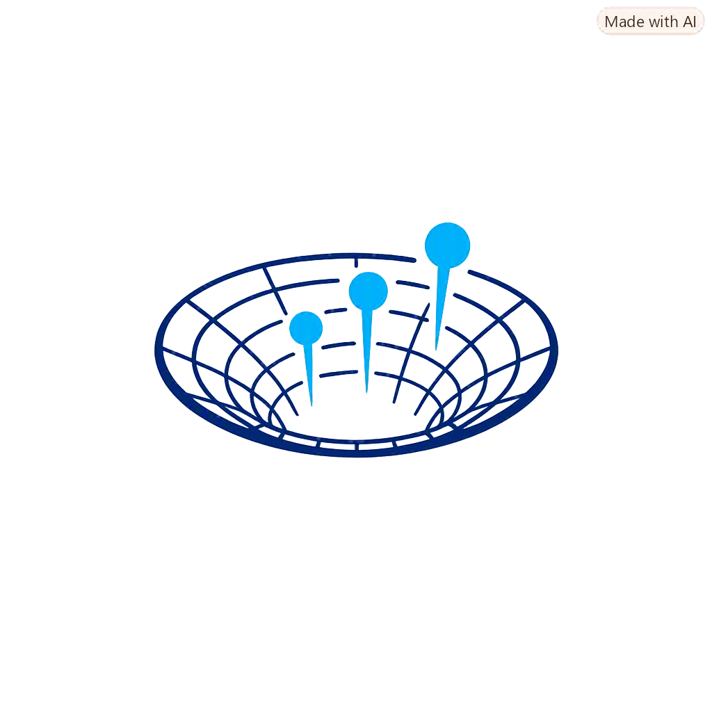

Discover the unknown unknowns
Turn any topic into a clear, custom-built answer
FATHmic — pronounced FATH-mik (like “fathom” + mic)
fathom: to get to the very bottom of something + -ic: the suffix that makes it an adjective — “of or relating to”
Type any topic below — FATHmic maps out the real decision points hiding inside it, you pick the ones that fit, and it writes your answer.
How much is riding on this?
FATHmic weighs stakes the way a thoughtful person would — it shapes both what gets asked about and how the result is written. Low stakes keeps categories light and exploratory, with a quick, confident write-up; high stakes surfaces the specific factors that actually determine correctness or safety, written with real care and caveats. This sets which one you're getting:
Low — light, exploratory categories; full confidence, no hedging.
Medium — normal categories; plain writing, with the point or two that actually matters flagged.
High — categories drill into the specifics that determine safety/correctness where the subject has them; writing is explicit about what's certain vs. not, with a clear nudge to check with a professional before acting.
Low — light, exploratory categories; full confidence, no hedging.
Medium — normal categories; plain writing, with the point or two that actually matters flagged.
High — categories drill into the specifics that determine safety/correctness where the subject has them; writing is explicit about what's certain vs. not, with a clear nudge to check with a professional before acting.
Demos & Trending
Preloaded Fathmic Demos
Most Searched:
Spec & Blueprint
50+ tuned starting points & counting — custom tattoos
Browse by field:
Stakes Change?
Select to Regenerate.
Select to Regenerate.
How should this come together?
Result
Requests for clearly illegal content are declined automatically. Beyond that: this is a distillation, not an authority. FATHmic draws on general knowledge — it isn't a scientist, a doctor, a lawyer, or omniscient. What comes back is only as specific and as sound as what you put in and picked: a structured starting point, not a verified answer. Confirm anything that actually matters against a real source.
Checking...
Searching...
Generating...
BLUEPRINT
Was this useful?
Thanks for the feedback.